The Lore of Dragon Age
You should not judge a book by its cover, but you can certainly judge a fantasy epic by the amount of lore it has. Middle-earth may be one of the most fleshed-out universes in literature, but when it comes to gaming, fantasy fanatics have the ever-expanding world of Dragon Age. In just three games, this franchise has built an overarching story spanning across thousands of years. That story takes place in diverse nations which are permanently engulfed in their own wars while also facing the constant threat of demons invading the world from above, below, and beyond. And it's the fate of that world which rests entirely on your shoulders.
As cool as that sounds, however, the massive lore of Dragon Age and the hundreds of hours it can take to play just one of the games can be a daunting proposition. But fear not, because we, the Grey Lore Wardens, are here to guide you through the entire history of the continent of Thedas.
Before Dragon Age 4 comes out, we've put together a timeline of all the events in the Dragon Age franchise, from the many demonic invasions, to magic schools and, of course, dragons. Study up!
THE ANCIENT AGE
-7600 Ancient - The elven city of Arlathan is founded and becomes the capital of Elvhenan, the biggest civilization in Thedas at the time, embarking most of the continent. Elves are granted the gift of magic by the elven gods, who walked the Earth among their subjects and provided them knowledge and protection. The elves used magic to build their civilization, a true marvel of the ancient world.
-4600 Ancient - Elves make first contact with the dwarves. There is no record of any fighting, and the dwarves speak of this time as one when elves reigned over the land and dwarves ruled the underground in peace.
-3100 Ancient - According to Solas, the elven goddess Mythal was betrayed and murdered by the elven pantheon called the Evanuris. In retaliation, Solas, also known as the elven god of deception Fen'Harel, traps the Evanuris in the Fade (the realm of spirits and demons), and creates the Veil, a metaphysical barrier separating both realms.
However, the creation of the Veil also severed the connection between the magic-dependent elves and the Fade, causing the demise of Elvhenan, and the loss of the elves' immortality.
- The first human tribe, called the Neromenians, appears in Thedas, and begins to settle in the Northern part of the continent, eventually forming the Tevinter Imperium.
-2850 Ancient - Elves first notice their loss of immortality, and dub it "The Quickening."
-2800 Ancient - The draconic Old Gods begin teaching magic to the humans, and whisper ideas of a Golden City in the Fade where the Maker of the world resides.
-2415 Ancient - A second human tribe, called the Alamarri, reach Thedas and settle in what would become Ferelden. Part of the tribe eventually splots up to form the Avvar.
-1595 - Thalsian, a Neromenian with the ability to enter the Fade at will, becomes the first known person to wield blood magic, after he claims to have learned it from the Old God Dumat himself.
-1207 - Darinius, the high king of the Neromenians, begins to unite the different human kingdoms in Tevinter under his rule, and allies himself with the ruler of the Dwarven Empire.
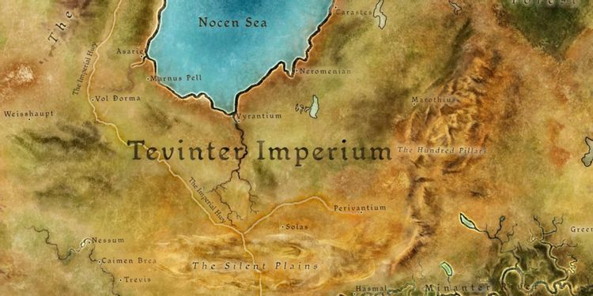PRE-AGES
0 TE (or -1195 Ancient) - Darinius forms the Tevinter Imperium after uniting the kingdoms of Qarinus and Tevinter, and declares himself the first Archon. The empire is a magocracy ruled by a group of powerful mages known as the Magisterium. According to Chantry texts, it was Thalsian who became the first Archon and used his blood magic to establish the empire. Darinius would die 15 years later.
25 TE -King Endrin Stonehammer moves the dwarven empire capital from Kal-Sharok to Orzammar in order to expand trade with the surface, which is becoming more important to the prosperity of dwarvenkind. Other sources claim that internal turmoil in Tevinter caused by the death of Darinius informed King Endrin's decision.
- King Endrin establishes the Paragons, the elite of dwarven culture and the pinnacle of dwarven excellence. The title of Paragon is bestowed upon the winners of the Grand Provins - essentially gladiatorial matches to settle all kinds of debates in dwarven culture.
64 TE - King Endrin Stonehammer is made a Paragon on his deathbed.
214 TE(or -981 Ancient): The Tevinter Imperium declares war on Arlathan and begins sieging the city.
220 TE - The Tevinter Magisterium resorts to a blood ritual that doesn't create a Philosopher's Stone, but insted sinks Arlathan into the ground, allowing Tevinter to conquer the elven kingdom and enslave all those who didn't perish in the war, crushing both the elven spirit and thier ancient culture.
300 TE - Following their victory against the elves, and with an army of slaves to use, the Tevinter Imperium starts expanding rapidly and conquering nearly all of northern Thedas, before setting their sights on uniting all human tribes under their rule.
503 TE - Archon Almadrius is assassinated, igniting a civil war in the Tevinter Imperium, with the magisters fighting for power.
575 TE - The city of Emerius is founded in the distant south of Tevinter as a slave and mining settlement. In time, it would become known as the "City of Chains," the center of the Imperial slave market. At some point, the city would become known as Kirkwall.
- Archon Parthenius claims the throne of the Tevinter Imperium and ends the civil war, after decades of in-fighting that saw heavy use of blood magic and demon-summoning for power.
800 TE (or -395 Ancient) - The Magisters Sidereal, seven members of the Magisterium and each a high priest to one of the Old Gods, conduct a massive blood sacrifice of slaves to breach the Veil and become the first humans to physically enter the Fade. Their goal is to reach the Golden City and have the Old Gods bestow godhood upon them.
What exactly transpired in the Fade differs depending on who you ask. According to Chantry lore (more about them later), the magisters' sinful pride tainted the Golden City and turned it black. As punishment, the Maker cast them down and then turned his back on humanity. High Priest Corypheus, however, says the city was already black when they entered it, and the throne of the Maker was empty.
What all sides agree on, however, is that the magisters returned to the physical world with the Taint inside of them, which turned them into the first "darkspawn," horrific and mindless monsters that carry a plague that essentially works as a zombie virus.
- The First Blight begins as the rapidly multiplying darkspawn go underground and find the Old God Dumat, freeing him from his prison and corrupting him into becoming the first Archdemon.
815 TE: The dwarven kingdoms begin to fall to the darkspawn, who attack the Deep Roads network of underground tunnels en masse. What was once a kingdom that stretched across the whole of Thedas was reduced to only two isolated cities surrounded by darkspawn. The darkspawn use these tunnels to quickly spread throughout Thedas, cutting communication between the kingdoms which get besieged by constant waves of attacks.
- The people of Tevinter pray to the other Old Gods for aid, but receive only silence, pushing the people to turn away from the Old Gods, believing they are being betrayed by the draconic creatures.
890 TE: The Night's Watch Grey Wardens are founded in the Anderfels to be an organization comprised of humans, dwarves, and even elves, united with the sole purpose of riding their mythical griffons into battle and wipe out the darkspawn wherever they appear.
In order to battle the darkspawn, the Grey Wardens ingest darkspawn blood in order to track and counter the darkspawn. The process doesn't make the wardens immune to the Taint, but simply slows it, and many easily fall to the call of the Old Gods and their corruption. Eventually, all wardens will succumb to the Taint, and so it is their duty to seek an honorable death by killing as many darkspawn before dying.
940 TE - The dwarves learn the secret of creating golems by turning volunteers into huge stone creatures using magic. The souls of the "volunteers" are trapped within the animated warriors. The use of golems helps the dwarves reclaim parts of the Deep Roads.
- Because of how efficient the golems are at killing darkspawn, King Valtor begins to force criminals and political dissidents into becoming golems. When Caridin, the paladin who created the golems, refuses to obey, he disappears along with the secrets of golem-making rather than accept his punishment of becoming a golem himself.
992 TE - Nearly two centuries after the Blight began, Archdemon Dumat is killed at the Battle of the Silent Plains by the Grey Wardens. The remaining darkspawn forces scatter, and the Grey Wardens become an officially recognized and independent organization.
- The prophet Andraste is born.
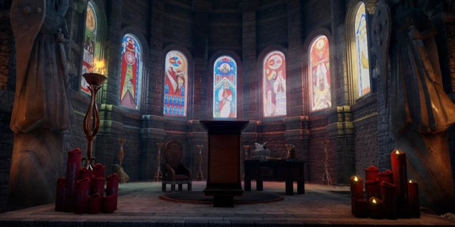1000 TE - The last of the darkspawn hordes are defeated and driven into the Deep Roads. Though humans celebrate the end of two centuries of war, the dwarves continue the fight deep underground. The Blight left the once-mighty Imperium severely weakened, and the damage done to the Deep Roads essentially shatters communication between the surviving dwarven kingdoms, which split into two separate nations.
1004 TE - The Grey Wardens encounter Corypheus, a rare intelligent darkspawn capable of speech and of controlling the hordes despite Dumat's death. He is believed to be one of the original Magisters Sidereal, and eventually gets imprisoned in a tower using the blood of Dumat.
1008 TE - Andraste marries an Alamarri chieftain named Maferath. Andraste starts preaching of a single creator she calls the Maker, who had abandoned humankind.
- According to Andraste, the original sin was committed by the first mages who looked through the Veil and summoned demons, who took the form of dragons, and started worshipping them. The second sin was the crossing into the Fade and the attempt to enter the Golden City. The only chance for humankind to redeem themselves was to stop letting magic rule over humans, as the Tevinter Imperium had done for so long.
- The more Andraste speaks, the more her following grows, and the more Maferath uses her teaching to unite the scattered Alamarri tribes under his rule. Together, they launch a war of independence against the heretical Imperium.
1015 TE - Maferath and Andraste lead a horde of barbarians towards the Tevinter territory, accompanied by massive rebellions welcoming their advance. They also free the slaves they encounter, who see freedom for the first time in centuries.
- A young elven slave named Shartan starts a massive slave rebellion.
1024 TE - The Battle of Valarian Fields gives the Alamarri a decisive victory over the Tevinter Imperium, and Shartan's army of former slaves decide to join Maferath's side against their former oppressors. Andraste names Shartan her champion, and he converts to her religion. Though they keep winning battles, they fail to conquer the Tevinter capital of Minrathous even after a long siege. This city would become like Russia in winter, attacked by nearly every army in Thedas and beyond, with every army failing in their attempt — unless you are the Mongols.
- Overwhelmed with jealousy of Andraste's popularity, Maferath makes a pact with Archon Hessarian of the Imperium.
1025 TE - Andraste is betrayed by her husband, and taken to Minrathous, where she is set on a pyre before the city gates. Shartan and a hundred elves charge the pyre to try and free Andraste, but they are all killed in the attempt. Andraste is killed during her execution by Archon Hessarian, who stabs her in the heart with his sword out of "mercy."
1030 TE - After the death of Andraste, Maferath is granted most of Southern Thedas to rule. He takes Ferelden for himself, and divides the rest of the land amongst his sons. These kingdoms would later become Orlais, Nevarra, and the city-states of the Free Marches.
- For their service in the war, the freed elves are given a new homeland in the Dales. Elves across the Imperium begin traveling to the Dales.
1035 TE - A cult starts spreading rapidly across southern Thedas, preaching the word of Andraste. Archon Hessarian converts to the Cult of the Maker and reveals Maferath's betrayal of Andraste. Maferath and his court are abandoned and then assassinated, bringing chaos and anarchy to Ferelden. The Tevinter Imperium abandons the Old Gods and converts to Andrastianism.
1065 TE - Andraste's disciples collect her story and teachings into a holy book — The Chant of Light. Numerous versions and interpretations are written over the centuries.
1070 TE - Archon Hessarian dies in his sleep.
1095 TE - The Inquisition is founded to "protect" the people from the "tyranny of magic," probably by a bunch of Hufflepuffs. Twisting the words of Andrastel, they start hunting down heretics and apostate mages in the name of the Maker.
1155 TE - The dwarves of Orzammar seal the Deep Roads connecting to the remaining dwarven kingdoms in a desperate attempt to avoid complete annihilation from the remaining darkspawn hordes.
1160 TE - The dwarven kingdom of Hormak falls to the darkspawn, and soon after, the kingdom of Gundaar is overrun.
1170 TE - A slave revolt results in the execution of all Tevinter rulers in Emerius. The city is renamed Kirkwall, and it becomes a part of the Free Marches.
1180 TE - The last of the Deep Roads are sealed, cutting off Kal-Sharok, which is presumed lost for millennia. The city still stands, however, and the surviving dwarves resent those in Orzammar for abandoning them.
1184 TE - As the Cult of the Maker spreads across the south of Thedas, the first great temple is constructed in Val Royeaux, the capital city of Orlais. A young man named Kordillus Drakon begins a series of holy wars in the name of his religion.
1192 TE - Drakon does not throw away his shot, conquers several neighboring city-states, and unites the Orlesian tribes under his rule, becoming Emperor of Orlais.
- The Chantry is formed by Emperor Drakon to spread the Chant of Light, effectively formalizing the Maker's cult into an official religion. History has its eyes on him, as Drakon commands that missionaries start spreading the teachings of Andraste.
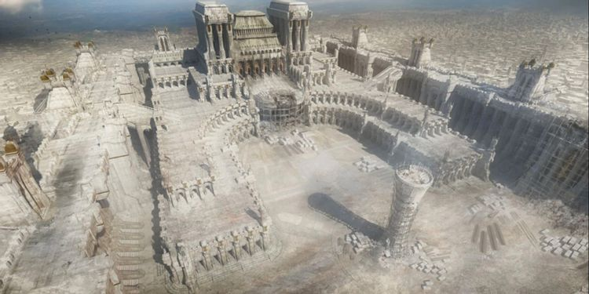THE DIVINE AGE
1:1 Divine (1st year of the 1st Divine Age) (or 1195 TE) - Justinia I is declared the first Divine of the Chantry, with the still unfinished Grand Cathedral in Val Royeaux serving as the center of power for the Chantry and the Divine's residence.
- Magic is declared illegal in Orlais except for mages working directly under the divine supervision of the Chantry.
1:5 Divine - The Second Blight begins with the awakening of Archdemon Zaziken in the Anderfels. The darkspawn hordes slaughter the entire city of Hossberg. The Tevinter Imperium abandons the Anderfels to the Blight, the Anders never forget this betrayal.
- Emperor Drakon decides to have the mages use their magic against the advancing darkspawn. It's very effective.
1:20 Divine - The Chantry and the Inquisition sign the Nevarran Accord, and the Circle of Magi is created to regulate and monitor the practice of magic, with the newly-formed Templar Order working as a police force supervising the mages and hunting down apostates. The Seekers of Truth order is also formed as a secret police above the Templar Order.
1:33 Divine - Emperor Drakon saves the Grey Warden's headquarters from the darkspawn, and they convert to worshipping the Chantry. Together, both armies save the nation of Anderfels from annihilation, and Drakon absorbs it into the Orlesian Empire.
- The elves of the Dales refuse to provide aid during the Blight.
1:45 Divine - Emperor Drakon dies of old age. His successor is seen as incapable of driving back the darkspawn and calm the rival factions within the empire. The Anderfels declare their independence 20 years later.
1:95 Divine - After 90 years, the Grey Warden Cordin slays Zazikel at the battle of Starkhaven in the Free Marches, ending the Second Blight.
- Astyth the Grey is made the first female Paragon after sacrificing her life to save the dwarven king. The Silent Sisters become the first fighting order of female warriors, is formed in Astyth's memory.
1:99 Divine: Divine Hortensia I names the Glory Age, predicting the rebirth of the world, and an age free of evil and Blights.
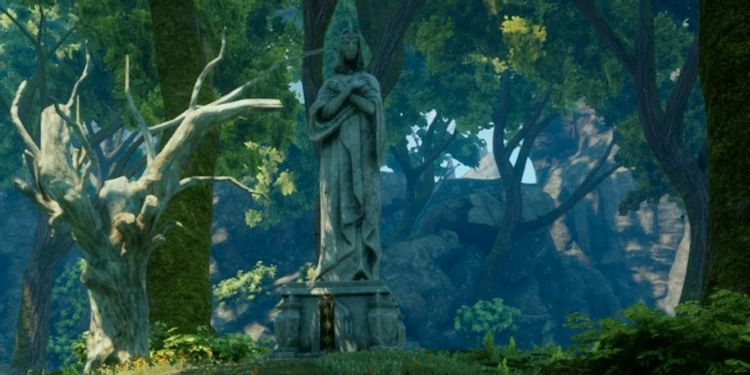THE GLORY AGE
2:9 Glory - Hostilities between elves and humans escalate, and elven forces attack and overrun the Orlesian town of Red Crossing. Humans across the land are enraged at the "atrocities" elves are said to have committed.
- Orlais immediately declares war on the elves of the Dales.
2:10 Glory - With the elven army moving fast on the capital of the Orlais Empire since their armies did not suffer nearly as many casualties during the Blight, Divine Renata I calls for a holy war against the elves. This war becomes known as the Exalted March of the Dales, a crusade named after Andraste's march against the Tevinter Imperium.
2:14 Glory - The elves sack Val Royeaux, capital of Orlais.
2:20 Glory - The combined human forces of Orlais and the Chantry push the elves back and conquer the Dale capital of Halamshiral. Elven settlements are wiped out and worship of the elven gods is forbidden. The surviving elves are forced to either live with humankind as second-class citizens in slums called "alienages," or venture out into the wilds as nomads calling themselves the Dalish.
2:30 Glory - The Winter Palace of Halamshiral becomes a retreat of choice for the Orlesian nobility.
2:80 Glory - A new Exalted March is declared on the city-state of Starkhaven in the Free Marches, and Orlais "liberates" it from the Tevinter Imperium.
2:83 Glory - An abomination is born when a demon possesses a mage in the Nevarran Circle of Magi, slaughtering both mages and templars nearby. In response, Divine Galatea grants the Right of Annulment to all Grand Clerics in the Chantry, allowing them to purge Circles of Magi and execute all mages within.
2:99 Glory - The Grand Cathedral in Val Royeaux is completed, and its two massive towers serve as the namesake for the next age, The Towers Age.
- Archon Vespasian is assassinated the same day as the Cathedral opens.
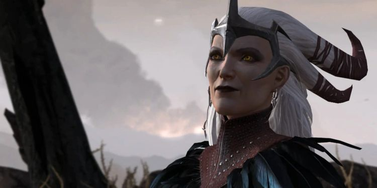THE TOWERS AGE
3:00 Towers - The shapeshifter Flemeth, also known as a "Witch of the Wilds" is said to be born in this year.
3:09 Towers - For the third time in history, the Right of Annulment is invoked in Antiva, and hundreds of mages are executed.
3:10 Towers - The Old God Toth awakens and the Third Blight begins. Even though the darkspawn appear in the strategically advantageous central parts of Thedas in larger numbers than ever before, the Grey Wardens are able to quickly organize a defense and push back the darkspawn.
3:18 Towers - After the darkspawn armies ravage the Free Marches, the Grey Wardens convince the Orlesian and Tevinter empires to send aid and join the fight.
3:25 Towers - Despite heavy casualties in the Free Marches, the combined armies of the Grey Wardens, Tevinter and Orlais, manage to destroy Toth and end the Blight in only 15 years.
- The victorious armies occupy the territories they liberated from the darkspawn.
3:87 Towers - A schism splits the Chantry, as the Tevinter Imperium is much more moderate when it comes to magic use, with mages allowed to rule as long as they don't use blood magic. They also consider Andraste to be not of divine origin, but a prophet with extraordinary magical talent. This does not sit well with the rest of the Chantry.
- The Tevinter Imperium establishes its own Imperial Chantry and elects a male Divine at the Minrathous Cathedral, often referred to as the "Black Divine."
3:99 Towers - The death of Divine Joyous II in Val Royeaux is celebrated by the Imperial Chantry, and the day is declared a holiday in the Tevinter Imperium.
- The Black Age is named as the Chantry calls for retribution against what they deem the "false Divine."
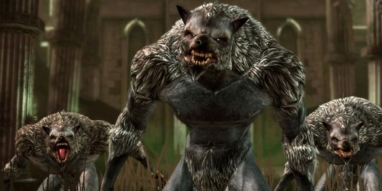THE BLACK AGE
4:00 Black - Werewolves reappear in Ferelden, because that's apparently a thing that just happens.
4:22 Black - The king of Antiva is assassinated at the hands of the Antivan Crows, an organization of thieves, spies, and assassins who used to be an arm of the Chantry.
4:40 Black - The Chantry declares a series of four Exalted Marches against the "heathens" of the Tevinter Imperium. All four times, armies across the Chantry's territories would march against Tevinter, and all four times Minrathous would repel conquest attempts.
4:80 Black - The Orlesian Empire, not satisfied with their attempts at conquering Tevinter, crosses the Frostback Mountains and launches a campaign to invade Ferelden.
4:84 Black - The many Alamarri tribes unite, and push back the invading Orlesian army.
4:99 Black - Divine Justinia II names the Exalted Age, as the holy war against Tevinter persists.
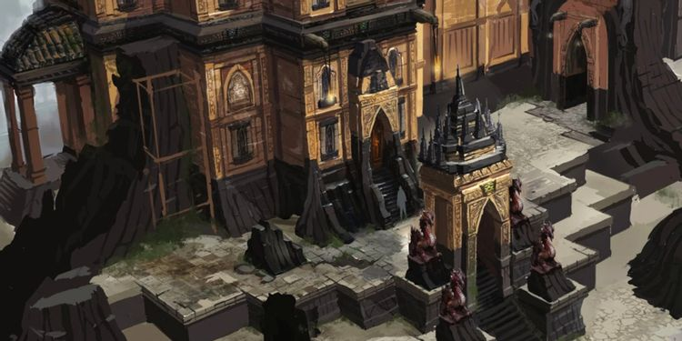THE EXALTED AGE
5:10 Exalted - The last Exalted March on the Tevinter Imperium ends in another retreat by Orlais, who failed to capture Minrathous. If only they had the Mongols with them.
5:12 Exalted - The awakening of Andoral marks the start of the Fourth Blight. Darkspawn overrun the Free Marches, Rivain, and Antiva. The Anderfels capital of Hossberg comes under siege by darkspawn.
- Orlais and Tevinter are able to drive back the darkspawn, then refuse to send any aid to the Anderfels or Free Marches out of fear of the other empire invading.
5:20 Exalted - The Grey Warden Garahel leads an army of Wardens that break the siege of Hossberg.
5:22 Exalted - Garahel gathers Wardens from all over Thedas and organizes an alliance between the leaders of the Free Marches. Their unified armies march against the darkspawn, with the Grey Wardens leading them.
5:24 Exalted - Garahel dies upon slaying the Archdemon Andoral at the battle of Ayesleigh, ending the Fourth Blight. So many darkspawn are slaughtered that everyone just assumes they went extinct and would never return. Of course, everyone forgets about the dwarves, who are still fighting the darkspawn underground.
5:25 Exalted - The Warden's legendary griffons go extinct due to heavy losses during the Blight.
5:42 Exalted - The Alamarri factions, always considered to be primitive, nomadic barbarians, are united under a single banner by Calenhad the Great. The nation of Ferelden is founded with Calenhad as king.
5:99 Exalted - Queen Madrigal of Antiva is assassinated after being stabbed in the chest by four steel swords. Horrified by this murder, Divine Theodosia I declares the Steel Age.
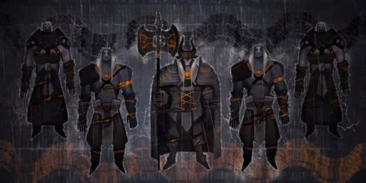THE STEEL AGE
6:15 Steel - Dragons are hunted to near-extinction, most famously by the dragon-hunters of the Pentaghast family of Nevarra.
6:30 Steel - A race of horned giants known as the Qunari land in the far lands of Par Vollen, conquering it from Tevinter unbeknownst to the rest of the continent.
- The Qunari bring with them the ideology of the Qun, which believes that the concept of individuality must be abandoned in favor of devoting oneself to the betterment of society. Though they possess superior technology, the Qunari are even more reluctant to use magic than the Chantry, and they see it as a major contradiction to the teachings of the Qun.
6:32 Steel - The Qunari Wars begin as Qunari ships start landing on the mainland.
6:42 Steel - The Qunari conquer much of the Tevinter Imperium, as well as Rivain, Antiva, and begin to assault the Free Marches.
- As strong and effective as the Qunari are, they are not the Mongols, and they, too, fail to capture the Tevinter capital of Minrathous.
6:85 Steel - Massive rebellions break out across the Qunari-controlled territories of Tevinter, and the Imperium starts pushing back. Eventually, the Qunari start retreating.
6:99 Steel - Divine Hortensia III foresees a growing storm of violence and names the next age the Storm Age. Not a single person laughs at how ridiculous this naming system is.
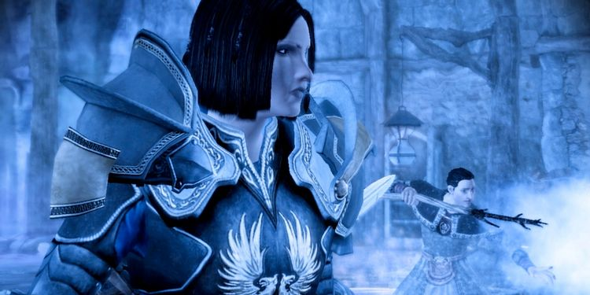THE STORM AGE
7:5 Storm - After the king of Ferelden dies without an heir, leaving two cousins with claims to the rule to fight for power: Sophia Dryden and Arland Theirin. Arland takes the throne, and Sophia joins the Grey Warden, eventually rising to the rank of Warden-commander in Ferelden. She then attempts a coup against Arland, using the armies of the Grey Wardens, but is defeated in battle and the Wardens are expelled from Ferelden.
7:25 Storm - The Imperial and Andrastian join forces for the first time and declare a new series of Exalted Marches against the Qunari. Mages from the several Circle of Magi under the Chantry rule prove essential in driving back the Qunari.
7:52 Storm - The second New Exalted March ends in disaster for the Chantries, as the Qunari were ready for it.
7:55 Storm - A third and final Exalted March on the Qunari is called.
7:84 Storm - After more than a century, the Qunari and the human nations of Thedas sign a peace treaty that ends the Exalted Marches after both sides suffer crippling casualties. Tevinter refuses to sign the treaty, while the Qunari retreat to Par Vollen to rebuild.
7:99 Storm - The end of the war with the Qunari, and the birth of twin sons to the emperor of Orlais ushers the Blessed Age.
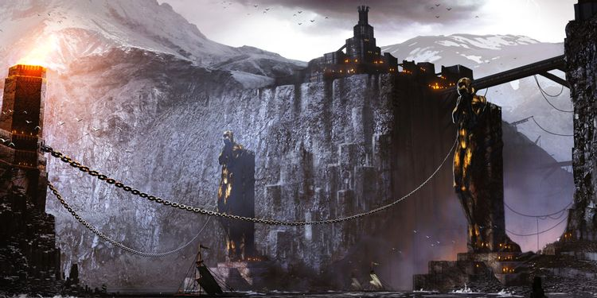THE BLESSED AGE
8:5 Blessed - Kirkwall becomes a free city after rebelling against Orlais.
8:21 Blessed - The Orlesian emperor passes away, and his son Reville Valmont is crowned Emperor.
8:24 Blessed - The Orlesian Empire launches its second invasion of Ferelden.
- King Vanedrin Theirin of Ferelden is killed in battle. His successor, King Brandel, fails to unite the country.
8:44 Blessed - The Orlesian Empire successfully sacks the capital of Ferelden and claims victory in their invasion, driving King Brandel into hiding.
- When Brandel dies, the people of Ferelden unofficially name his daughter Moira "The Rebel Queen," and she leads the Fereldan resistance.
8:47 Blessed - Emperor Reville, fearing that the Orlesian nobles would want to replace him with his twin brother, Gratien, orders the murder of Gratien's entire family — including his three grown children, and eight grandchildren. This act earns him the title of "The Mad Emperor."
8:51 Blessed - Emperor Reville Valmont dies after spending an entire year locked in his room, fearing retribution for the murder of his twin brother's family. His son, Etienne, is crowned Emperor.
8:55 Blessed - The Qunari reignite their war against the Tevinter Imperium and conquer the land of Seheron.
8:65 Blessed - Blood magic is once again on the rise in Tevinter, after centuries of it being forbidden by the Andrastian Chantry.
8:76 Blessed - An epidemic dubbed "The Hundred Days Cough" hits Orlais, leaving Florian Valmont as the only surviving heir to the throne.
8:78 Blessed - Birth of the Rebel Queen's son, Maric Theirin, who continues the bloodline of the legendary Calenhad Theirin.
8:96 Blessed - Moira the Rebel Queen is assassinated under orders from King Meghren of Orlais. Her son Maric escapes.
- Endrin Aeducan ascends the throne of Orzammar.
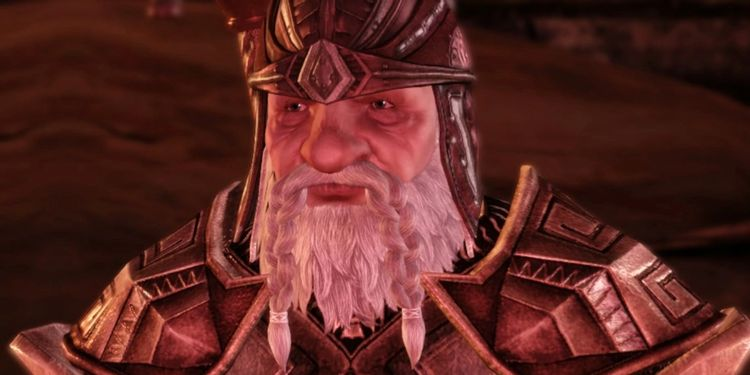8:98 Blessed - Prince Maric leads an army of Fereldan rebels to rise up against the Orlesian occupation.
8:99 Blessed - The Fereldan rebel army is ravaged at the battle of West Hill and Maric is presumed dead.
- The Legion of the Dead, a formidable dwarven army not unlike the Grey Wardens in their dedication to annihilating the darkspawn, and their sacrifice (the name derives from the fact that Legionnaires consider themselves to be already dead the moment they join), join the very much alive Prince Maric and help him hunt down those who betrayed his mother.
- The first returning dragons emerge in Antiva and start wreaking havoc in Thedas, after they were thought to be extinct. When another dragon is sighted in Orlais near the Frostback Mountains, Divine Faustine II changes her mind in naming the Sun Age, and instead declares the beginning of the Dragon Age — predicting it to be yet another age of violence (which age isn't?).
- At the Battle of River Dane, Loghain Mac Tir leads the Fereldan rebels to victory against Orlaisian occupiers.
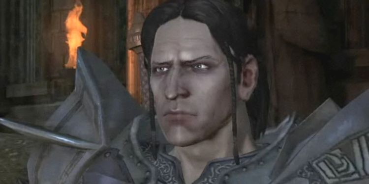THE DRAGON AGE
9:00 Dragon - The Orlesian occupation of Ferelden ends after Prince Maric kills the usurper King Meghren in a duel at Fort Drakon. Three years later, Maric is crowned as King of Ferelden.
9:10 Dragon - The intelligent darkspawn known as The Architect attempts to kill the remaining Old Gods and let the Taint corrupt the entire surface world. It is rumored this darkspawn is one of the original Magisters Sidereal.
- King Maric joins with the Grey Wardens and stops The Architect. After two centuries of exile, Maric allows the Wardens to return to Ferelden.
9:12 Dragon - The Orzammar dwarves discover that the kingdom of Kal-Sharok is still standing. Though they try to reunite the two kingdoms, the dwarves at Kal-Sharok are still resentful for being abandoned during the First Blight and refuse to bow to the king of Ozammar.
9:13 Dragon - Dwarven scholars observe the destruction of the fortress of Bownammar to a horde of darkspawn, and believe this to be the first sign of a coming Blight.
9:20 Dragon - Empress Celene ascends to the Orlesian throne and officially makes peace with Ferelden.
9:22 Dragon - Cassandra Pentaghast is named Hero of Orlais and the Right Hand of the Divine after foiling an assassination attempt on Divine Beatrix III.
9:25 Dragon - King Maric is thought to be lost at sea during an expedition. In reality, he's imprisoned by Antivan Crows. His son, Cailan Theirin inherits the Fereldan throne and marries Loghain Mac Tir's daughter, Anora. Loghain becomes Cailan's biggest advisor, and the person in charge of Ferelden's defense.
9:27 Dragon - An apostate mage named Malcolm Hawke, responsible for resealing Corypheus in his prison, dies, leaving his family in the hands of his wife, Leandra, and his eldest child, the future Champion of Kirkwall.
- A coup in the Imperial Chantry replaces the current Black Divine with conspirator Urian Nihalias.
9:29 Dragon - Alistair, the illegitimate child of King Maric with an elven mage named Fiona, joins the Grey Wardens.
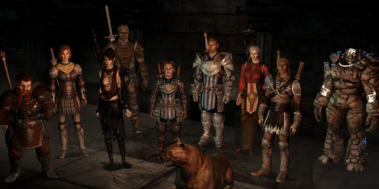THE EVENTS OF 'DRAGON AGE: ORIGINS' BEGIN
9:30 Dragon - The Fifth Blight officially begins when The Architect accidentally corrupts the Old God Urthemiel into becoming an Archdemon, though it is believed by some that this took place 17 years earlier. He was originally performing a ritual on Urthemiel to free the darkspawn from the call of the Old Gods, which forces each darkspawn to devote their lives to freeing and corrupting an Old God.
- Crown Prince Trian Aeducan of Orzammar is murdered, and his middle sibling is banished to the Deep Roads, becoming a scapegoat for their youngest brother, Bhelen.
- Arl Rendon Howe murders Tryrn Bryce Cousland and Teyrna Eleanor Cousland, their son, Fergus, led most of the Tern's soldiers to Ostagar to join King Cailan.
- The Sabrae clan of the Dalish elves moves to the Free Marches to escape the Taint and the coming Blight.
- The Warden (that's you!) is inducted into the Grey Wardens.
- The armies of Ferelden are defeated and all but annihilated by the darkspawn at the Battle of Ostagar, as Teyrn Loghain Mac Tir betrays his king and deserts. King Cailan Theirin dies, as does Warden Commander Duncan.
- The Warden and Alistair are saved by Flemeth, a Witch of the Wilds.
- Loghain Mac Tir returns to Denerim and declares himself regent. This triggers a Fereldan Civil War.
- At this time, the Hawk family flees to Kirkwall with the aid of Flemeth, escaping an attack by darkspawn.
- The Warden goes to Redcliffe seeking the help of Arl Eamon, but instead has to try and save the town from undead attackers, and a child possessed by a demon. After finding the sacred ashes of Andraste, the Warden cures Eamon, who suggests an end to Loghain and the Blight by calling a Landsmeet with the purpose of placing Alistair on the throne.
- Several mages at the Circle Tower of Lake Callenhad become abominations, and massacre mages and templars alike. The Warden, seeking the help of the Circle of Magi, who are bound by oath to help in times of Blight, is confronted by the demon controlling the abominations. The Warden has to decide whether to carry out the Right of Annulment and murder all mages in the Circle, or declare that blood mages have been dealt with and save the remaining mages.
- The Warden may gain the allegiance of the Dalish elves after accidentally getting involved in a werewolf hunt — because a dragon, demons, the undead, and an army of darkspawn just aren't enough. You can choose between an army of werewolves, or the elves supporting you.
- After King Endrin Aeducan dies without a clear successor, and the Warden must support a new king before securing the aid of the dwarven troops of Orzammar. A big dwarven assembly, a bunch of side quests, and Mandalorian-like favors ensue, including the destruction or recovering of the magical anvil that creates golems. This all results in a new dwarven king who honors the Grey Warden treaties and pledges Orzammar's forces to join the fight against the darkspawn.
- At some point this year, Hawke — the future Champion of Kirkwall — arrives at the city of Kirkwall with his family. On the way, Hawke lost a sibling to a darkspawn attack, but they were saved by Flemeth. Upon arrival, Hawke is employed by either the Red Iron mercenaries, or Athenril's smuggling group in order to pay off the bribe to city officials to let the family enter the city, which is filled with Fereldan refugees escaping the Blight.
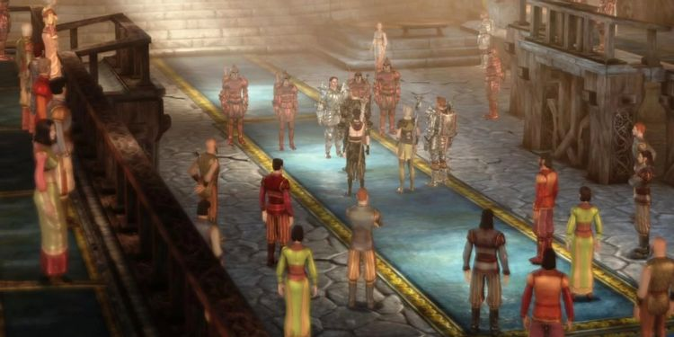9:31 Dragon - The Warden and his allies take a quick break to attend a political rally, vote in the Landsmeet election, and perhaps even challenge the votes by storming the Capitol. You must choose between executing Loghain, or allowing him to join the Grey Wardens, and pick a new ruler between Alistair or King Cailan's widow, Anora — or have them marry and rule together.
- The Warden finds out the truth about how an Archdemon is defeated. When a Grey Warden strikes down the Archdemon, the Old God's soul possesses the Warden, and both die.
- Before you head out to the final battle, Flemeth's daughter Morrigan offers a solution to the sacrifice by carrying your child and make it absorb the Archdemon's soul instead — and figure out what to do with a demon god child at some later date.
- With The Warden's allies uniting under a single banner, and the final battle takes place on Fort Drakon in Denerim, where the Archdemon Urthemiel is slain by either the Warden, Alistair, or Loghain. The Warden becomes known as the Hero of Ferelden.
- The Darkspawn Civil War begins as The Architect starts a conflict with the leader of the darkspawn Broodmothers. This conflict ends when the Wardens purge all darkspawn in Ferelden and the Mother (leader of the Broodmothers) dies. The fate of The Architect is decided.
- The Circle of Magi in Starkhaven burns to the ground, and all surviving mages are relocated to Kirkwall, resulting in the city having the largest Circle within the Free Marches.
- Following a battle between Qunari and Orlesian forces, a large group of Qunari are stranged near Kirkwall and take up residence in a section of the docks.
- Anders, a mage, escapes the Circle of Magi at Kinloch Hold, gets captured by the Templars and sentenced to death, but is instead allowed to join the Grey Wardens. At some point, he rescues the bravest knight in the kingdom, a cat named Ser Pounce-a-lot.
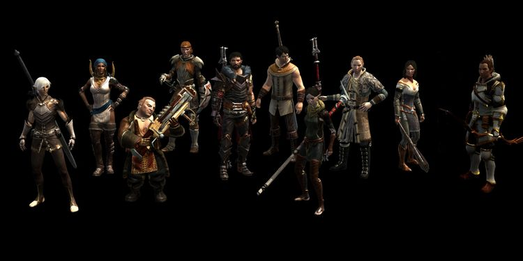THE EVENTS OF 'DRAGON AGE II'
- Word of the Hero of Ferelden's role in ending the Blight finally reaches Kirkwall.
- Hawke helps fund an expedition to the Deep Roads with dwarves Bartrand and Varric Tethras. Before joining the expedition, Hawke has to deal with a series of side quests for a Templar named Thrask, who is strangely understanding of mages. First, he helps deal with an elven mage and a group of slavers in Kirkwall, then deals with a group of apostate mages who escaped from Starkhaven and either killing them or letting them go, and generally get a sense of the political state of Kirkwall — from the increased tensions between the excessive number of Templars in Kirkwall and the mages they were exerting draconian rule over, to the brewing hostilities between humans and Qunari.
- Hawke heard from Varric that a Grey Warden is in Kirkwall, and that they should join the expedition. This turns out to be Anders, a former Grey Warden and a mage with an extreme hatred for Circles. Anders has a map for the Deep Roads and gifts it to Hawke in exchange for the rescue of his friend Karl, who they later discover was turned Tranquil (a punishment where mages' connection to the Fade is severed to avoid demonic temptation, but has the side effect of them losing all emotion). Angry at this revelation, Anders reveals he has merged with the spiritual personification of Vengeance, who fuels his anger at the Circles.
- With the help of Anders and his maps, the Deep Roads expedition finally begins. Hawke brings in his surviving sibling, and together, the expedition comes across an idol made of pure lyrium (a magical mineral) as well as a massive pile of treasure, which is enough for Hawke to buy his way into the Kirkwall nobility. Hawke's sibling contracts the Taint, and unless Anders joined the expedition, he dies.
9:32 Dragon - The Warden-Commander of Ferelden confronts Morrigan, who leaves using a magic elven mirror called an Eluvian. She is rumored to join Empress Celene's court in Orlais, possibly with her demon god child.
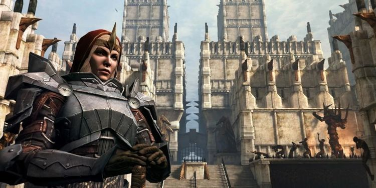9:34 Dragon - Hawke's mother, Leanne is killed by a blood mage named Quentin.
- Tensions between templars and mages worsen, as Knight-Commander Meredith enacts more restrictions and worse punishment for mages. Perhaps due to this, or simply due to the people of Kirkwall having lived in close proximity to a group of Qunari for a few years, more and more people start to converting to the Qun, including the son of Kirkwall's viscount, Seamus, angering the Chantry.
- When Seamus is murdered, Hawke discovers a conspiracy involving Sister Petrice from the Chantry, and discovers she (who had already tried to set Hawke up to be killed by the Qunari) orchestrated Seamus' assassination to incite more violence against the Qunari. Of course, this works a little too well, as Petrice is killed by the Qunari, who decide to take matters into their own hands and launch a full-scale attack on Kirkwall to overthrow the city's rulers. The Qunari rate the Viscount's Keep and behead the viscount to quash any and all resistance, but Hawke joins forces with Knight-Commander Meredith and the First Enchanter Orsino of Kirkwall's Circle of Magi, and defeats the Qunari. The remaining occupying forces withdraw from Kirkwall, and Hawke earns the respect of the city's templars, mages, and the nobility, as Meredith names Hawke the Champion of Kirkwall.
- Hawke defeats an awakened Corypheus, but he transfers his essence to a Grey Warden through the Taint like the Archdemons do, and escapes.
- Meredith takes power and becomes a steward of Kirkwall, imposing even tighter sanctions on the city's Circle of Magi and turning the city into a templar-controlled police state. She also blocks all attempts at appointing a new viscount.
- Justinia V becomes the new Divine of the Chantry. She appoints Leliana, a companion of The Warden, as her Left Hand and Spymaster, and Cassandra as her official Right Hand.
9:37 Dragon - More and more mages turn to blood magic and escaping their Circles in desperation over the restrictions. Hawke uncovers a secret conspiracy between apostate mages and friendly templars led by Thrask, who are working to improve relations between mages and templars, and also remove Meredith from power. Hawk must decide whether to have all the conspirators executed, or plea with Meredith to show them mercy. Meredith and Orsino grow increasingly convinced that the other is planning to kill them.
- Hawke is summoned to the Chantry by its Grand Cleric, Elthina, who explains that Divine Justinia V is contemplating an Exalted March against Kirkwall. Leliana is dispatched, and after a brief fight with Hawke, warns that war is coming and Kirkwall is no longer safe. She also instructs Elthina to leave for Orlais.
- Anders decides that the time for negotiations has passed and there can be no more compromise. He triggers an explosion inside the Kirkwall Chantry, completely destroying it and killing everyone inside — including Elthina. Meredith decides to call for the Right of Annulment on all mages in Kirkwall, and Hawke has to decide whose side the Champion of Kirkwall is on. Whatever the decision, Orsino resorts to blood magic and is killed by Hawke. It also becomes clear Meredith had gone mad from embedding lyrium into her sword, and the power of the lyrium turns Meredith into a statue.
- Hawke flees Kirkwall, not to be heard of again.
- Morrigan is appointed "Arcane Advisor" to Empress Celene I.
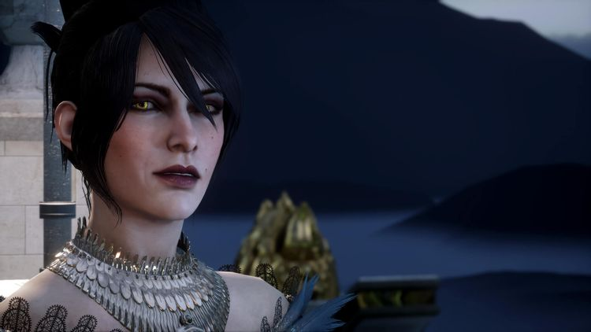- Anders' actions spark a rebellion that spread from Circle to Circle, with mages all over Thedas rising up against the Chantry. This launches the Mage-Templar War, with templars turning their sword on mages — whether they rebel or not — and mages turning to blood magic to fight back.
9:38 Dragon - The Templars disband the College of Enchanters, after they reject a motion to dissolve the Circle of Magi.
- If Alistair survived and becomes king, travels to Antiva looking for clues about King Maric.
- Grand Duke Gaspard de Chalons' plans to overthrow the Orlesian Empress Celene I result in the start of the War of the Lions — also known as the Orlesian Civil War.
- Solas, the Dread Wolf, awakens after centuries of sleep, and tries to re-establish dominion over the Eluvian network (which is definitely not just a rehash of the Mass Relay network, why do you ask?). Horrified by what's become of Thedas and the elves, he makes plans to tear down the Veil and restore the ancient world.
9:40 Dragon - Cassandra and Leliada begin searching for the Champion of Kirkwall, as they form the Inquisition.
- Following a violent uprising at the White Spire Circle of Magi in Orlais, the leader of the Seekers of Truth cancels the Nevarran Accord, severing ties between the Seekers and the Chantry. He then declares the end of the Circle of Magi, starting the Mage-Templar War in earnest.
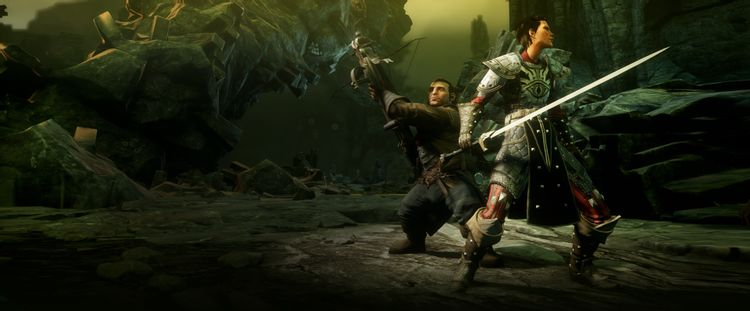THE EVENTS OF 'DRAGON AGE: INQUISITION' TAKE PLACE
9:41 Dragon - Divine Justinia V calls for a Conclave to bring about an end to the Mage-Templar War at the Temple of Secred Ashes, which houses Andraste's sacred remains At the same time, Corypheus, calling himself "The Elder One", infiltrates the Conclave to try and sacrifice the Divine to power up an Orb given to him by Solas and reenter the now-Black City and claim the Maker's empty throne. Before he can finish the sacrifice, a random bystander(that's you again!) knocks the Orb from Corypheus' hands, gaining the power of the Anchor and causing a massive explosion that destroys the entire temple, killing thousands and creating multiple tears in the Veil. The bystander is transported to the Fade, and witness accounts say he was saved by Andraste herself.
-Three days later, Leliana and Cassandra lead the bystander to the huge tear in the Veil above the remains of the temple, which they dub "The Breach." The bystender manages to calm the Breach and stop it from growing, after which they are hailed as the Herald of Andraste.
- Believing the Herald was sent by the Maker themselves, Cassandra and Leliana start the Inquisition independently form the Chantry, in order to find those responsible for the Breach. Both the Chantry and the Seekers of Truth denounce the Inquisition.
- The Herald is forced to take a side in the Mage-Templar War in order to gain the support of either side to properly seal the Breach, effectively ending the war. Whomever the Herald sides with, thier faction is changed forever, and tje remaining faction is corrupted by Corypheus.
- The Herald seals the Breach with the help of Solas and thier allies, but Corypheus launches a surprise assault on the Inquisition while riding a dragon corrupted with lyrium. The Inquisition evacuates, but not before thier headquarters is burried with a bulk of the invading army under an avalanche. The Herald, having saved the Inquisition, is proclaimed by Cassandra and Leliana as its supreme leader, the Inquisitor.
- Corypheus corrupts the Grey Wardens in the Orlais, causing them to get vivions that a new Blight is nigh. They blood sacrifice thier warriors to raise a demon army, with the plan on marching into the Deep Roads and killing all remaining Old Gods before they become Archdemons.
- They Herald joins Hawke and together they storm the Warden's fortress to stop the sacrifice. After being physically transported to the Fade, the squad defeats the Nightmare demon that was controlling the Grey Wardens, and the Herald decides to ethier ally with the surviving Grey Wardens or banish them from Orlais.
- The Herald takes some time off thier busy schedule to attend a ball held by Empress Celene I at her winter palace in Halamshiral, and learns of an assasination attempt against her. The Herald effectively chooses how the Orlesian Civil War ends, as depending on thier choices, Celene survives and keeps throne, or Gaspard is crowned as emperor, or a third party is installed as a secret puppetmaster behind the new emperor. Whomever ends up ruling Orlais pledges thier military support to the Inquisition, and Morrigan gets appointed as Orlais'liaison.
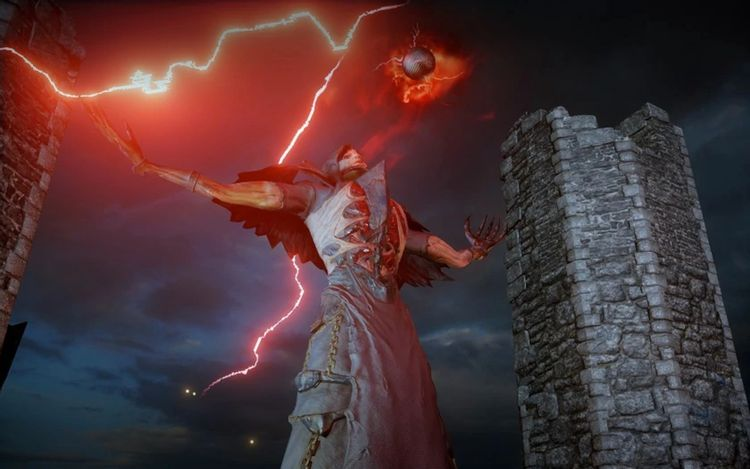9:42 Dragon - The Inquisition pursues Corypheus to the ancient Temple of Mythal, the old elven god, in the Arbor Wilds. Morrigan deducts that Corypheus is searching for an eluvian to reach the nexus of all magical mirrors, and the Inquisition mounts an assault on Corypheus' remaining forces.
- Morrigan and the Herald chase Corypheus inside temple, and ally themselves with the Sentinels, a group of elven defenders of the temple from before the fall of Elvhenan. They discover that Corypheus' true goal was Well of Sorrows, an ancient artifact that gives them knowledge of every elven servant of Mythal before them, and therefore more knowledge than anyone on Thedas. Either the Herald or Morrigan drinks from the well, and whoever does so becomes forever bound to the will of Mythal.
-The Herald and Morrigan discover that Flemeth is actually the vessel of Mythal herself, and she is now in control of whoever drank from the well. Flemeth explains that Corypheus' dragon is actually a copy of an Archdemon, corrupted by red lyrium and infused with its master's own power. If the dragon is slain, Corypheus won't be able to jump to another body, and will die for good. If Morrigan drank from the well, Flemeth gives her the ability to turn into high dragon just like her mother; if the Herald drank instead, they gain the power to summon a mythical high dragon devoted to Mythal.
-Corypheus uses the Orb of Destruction to reopen the Breach, and when the Inquisition's army arrives, he raises the ruins of the Temple of Sacred Ashes into the air to simulate the Black City. The Inquisition's dragon ally fights Corypheus' own while Herald fights Corypheus on the ground. Using the Anchor, the Herald takes the Orb from Corypheus' hands and seals the Breach permanently, before banishing Corypheus' very essence to the Fade.
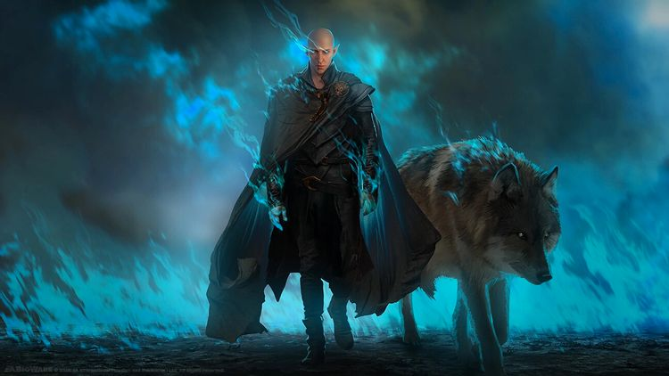- In the aftermath of the battle, Solas finds the Orb, which has been irreparably damaged, and bids farewell to the Herald, departing without explanation.
- Divine Victoria becomes the new leader of the Chantry, depending on your choices, Leliana or Cassandra can become the Divine.
- Somehow, Varric becomes Viscount of Kirkwall.
- A clutch of griffons are discovered in the Anderfels by Grey Warden recruits, the first in centuries.
- Morrigan leaves the Inquisition, never to return. Many grow concerns over the ever-growing power of the Inquisition.
- At some point, Solas finds Flemeth by an eluvian, and they greet one another as old friends. Flemeth recognizes the "Dread Wolf" and Solas apologizes to Mythal for giving the Orb to Corypheus. Although he recognizes that he should pay for his mistake, Solas argues that the elves need him, and then he seemingly absorbs Mythal's essence, leaving Flemeth to die.
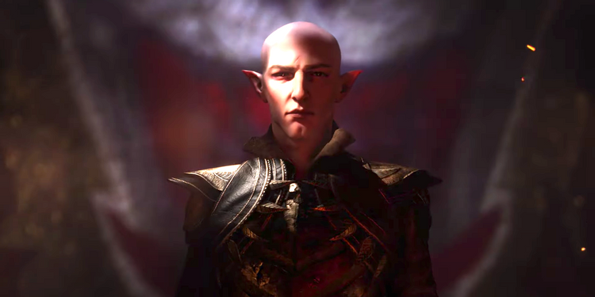9:44 Dragon - Divine Victoria calls for an Exalted Council to determine the future of the Inquisition. Before any decision can be made, the Inquisition is sent to deal with a Qunari plot called "Dragon's Breath" that would target and kill all of southern Thedas' nobility.
- Thanks to information and assistance from Solas, the Qunari plot is stopped.
- The Herald discovers that Solas is, in fact, Fen'Harel, and plans to destroy the Veil and bring back the world of ancient elves. Solas then severs the Herald's left forearm to remove the Anchor, and disappears fully in control of the entire eluvian network.
- Elves from across Thedas, whether servants, Dalish, or even members of the Inquisition, abandon their posts and follow Solas, their numbers beyond count.
- The Herald returns to the Exalted Council and announces what the fate of the Inquisition will be — either to serve as Divine Victoria's personal guard, to disband entirely, or to reform in secret without answering to anyone. This is done to root out Solas' agents who have infiltrated the Inquisition. Whatever the outcome, the core Inquisition leaders set their sights on the Tevinter Imperium to get new recruits, and on Solas as their enemy...